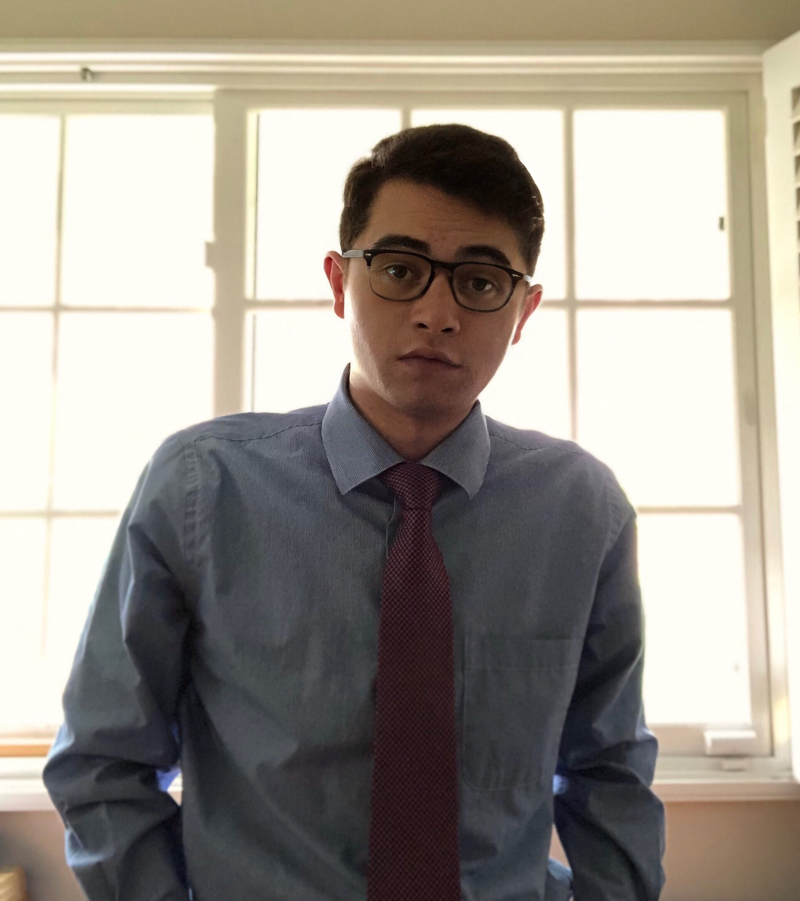
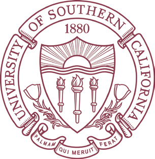

 My name is Sully Chen! I'm a 20 year old student
studying biochemistry at the University of Southern California. I previously studied computer science at California Polytechnic University.
I have a strong computer science and machine learning background, and started my first internship as a machine learning engineer at
ParseHub shortly after turning 17. At ParseHub, I worked mainly on designing
state-of-the-art artificial neural networks for encoding human-readable information into high-dimensional spaces. I used LSTMs trained on
massive amounts of web data to generate random sample HTML web pages and encode data in TensorFlow.
After my time at Parsehub, I entered my senior year in high school and spent a few months working on autonomous
vehical related research, during which I created my popular
GitHub repository, which is an implementation of a paper by Nvidia. This repository and dataset are cited in numerous academic
research papers across the world and frequently appear in lectures and online courses. The popularity of this repository landed me
interviews at several software companies, including Nvidia, Cruise, and Leap Motion. Though I received offer packages from both
Nvidia and Leap Motion, I ultimately decided to join Leap Motion, where I worked from my senior year through my freshman year at
Cal Poly.
During my time at Cal Poly as a CS major, I actually didn't take a single computer science course. Instead, I spent this time enrolling in
as many mathematics courses as I could, captivated by the beauty. By the end of that year I had written a mathematics paper under
the guidance of Professor Erin P.J. Pearse, and was strongly considering pursuing a degree
in mathematics. Ultimately my long-standing passion for medicine drove me to transfer to the University of Southern California to
study biochemistry. I felt that biochemistry would give me a broad background in the natural sciences and research before I hopefully
attend medical school. During my time at USC (where I am currently in my junior year), I have been involved in a couple research projects,
winning several awards and presenting at Harvard. See my research page for more information!
Though I am studying biochemistry and currently have plans to pursue an M.D., I have a strong computer science background and hope to unite
my passions through research. I am particularly interested in how advances in machine learning can be applied to preventative medicine, as well
as how to develop better computer-based tools to assist physicians. I'm also fascinated by regenerative medicine and ways to give those who
suffer from disability more control over their lives. Though I have little experience in this field, I strive to gain a better understanding
and contribute to the world when I hopefully attend medical school.
Education

August 2018 - May 2021
B.S. Biochemistry
Awards: Alumni Scholarship, Dean’s List, Outstanding Student in General Chemistry, ΦΚΦ Honor Society, Provost Research Fellowship
Activities: Concerto Chamber Orchestra, Remedy Through Music, Pre-health Ensemble
 September 2017 - June 2018
September 2017 - June 2018
Awards: Dean's List, President's List